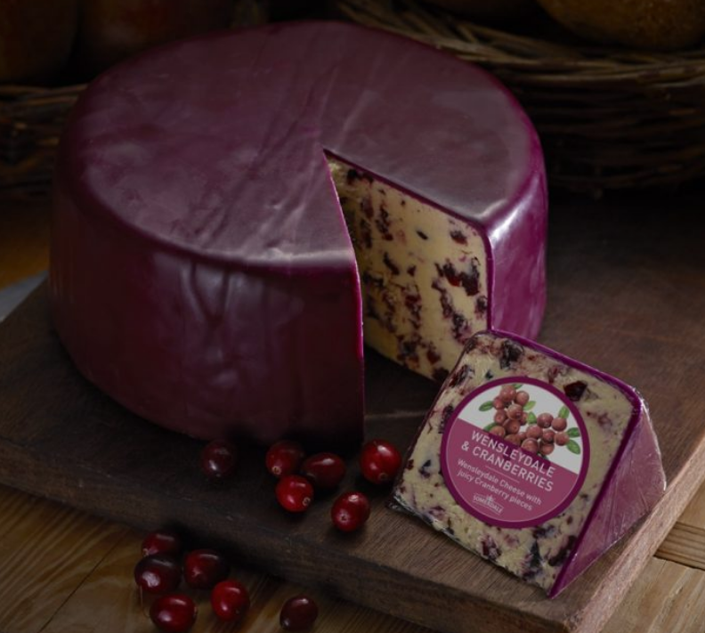
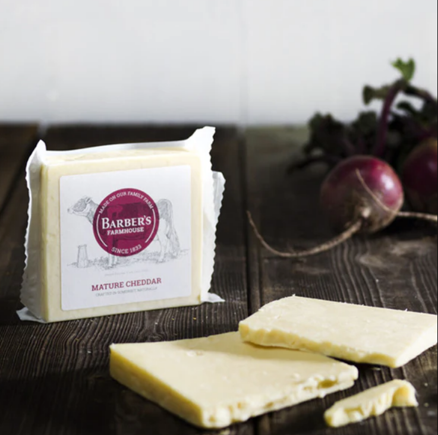
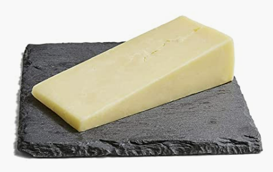
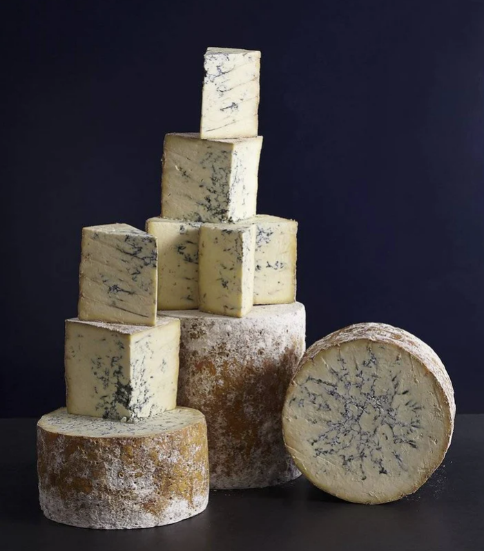

England#
Cranberry Wensleydale (Somerdale)#
{kind=link}
Style: Flavored
Milk: Cow
Purchase location: Whole Foods
Purchase date: 05/02/22
Julie’s comments: Thick waxy purple rind, pale purple crumbly interior with small dried cranberries. Dessert cheese - sweet but not overly so (not syrupy). Crumbles in mouth, creamy with texture from cranberry chunks. Mild, yogurty flavor - many Thanksgiving vibes. Tasty when mood right. 3.69/5
Andrew’s comments: Tastes like a relatively unsweet cheesecake, texture as well. Cranberry is nice, not too strong. Cheese itself is Gouda-y or Cheddary, nothing too special. Dessert or cheese/fruit plate cheese, not ideal for mid dinner snacking. 2.9/5
Double Gloucester, Chive & Onion (Unknown)#

Style: Flavored
Milk: Cow
Purchase location: Ingles
Purchase date: 05/08/21
Julie’s comments: Waxy, gummy, strong chives, semi soft, creamy. Not my favorite, but would try a non-flavored variety. 1.0/5
Andrew’s comments: This reminded me of the cheese between crackers in those snacks. Felt overprocessed and a bit weird, but honestly sort of tasty? 2.1/5
English Farmhouse Cheddar (Barbers)#
{kind=link}
Style: Cheddar
Milk: Cow
Purchase location: Weaver Street
Purchase date: 07/31/22
Julie’s comments: Firm, off white, crumbly block. Sharp, salty, nutty aged cheddar, a teeny bit of caramel/toast (?) at the roof of the mouth. Would pair well with a spicy or sweet jam, also with bourbon. I could eat this all day. 4.01/5
Andrew’s comments: Very creamy, semi-sharp, and a bit tangy. Firm texture with surprise crystals here and there. V snackable. 3.8/5
Keens Farmhouse Cheddar (Neals Yard)#
{kind=link}
Style: Cheddar
Milk: Cow
Purchase location: Whole Foods
Purchase date: 05/15/22
Julie’s comments: Looks like a standard white cheddar, but I would not have guessed it was a cheddar by taste. Smooth, gummy texture. Not very crumbly, salty and tangy flavor, with a sharp sour feeling that lingers at the end. At first I really didn’t like it, but it has grown on me. Pair with crackers or a jam (not a spicy one)…hmm… 2.29/5
Andrew’s comments: Not the most cheddary, semi-sharp. Kind of tangy and a bit of licorice? And a bit of almost fermented taste that reminds me of the Caciacavallo. Smooth texture with small grains. Overall interesting but not the best. 2.1/5
Sparkenhoe Red Leicester (Neals Yard)#

Style: Other
Milk: Cow
Purchase location: Whole Foods
Purchase date: 03/26/22
Julie’s comments: Bright orange firm aged cheese with a thin waxy rind. Mild flavor - nutty, a bit of sweetness, very earthy taste - kind of like a more mellow cheddar & some dirt. Decent, but not thrilling. Probably would be good melted on a burger. 2.4/5
Andrew’s comments: A bit sharp, a bit nutty, a bit earthy. Strange after taste. Hard, a bit crumbly, gritty. 1.8/5
WFM Colston Basset Stilton (Neal’s Yard)#
{kind=link}
Style: Bleu
Milk: Cow
Purchase location: Whole Foods
Purchase date: 08/16/22
Julie’s comments: It’s blue! Or rather tan & crumbly, streaked with grayish blue lines. Very salty, funky & staticky, especially in the very blue parts. Non-blue parts are salty, buttery, melt on your tongue. Not my fave, but not bad for bleu cheese. 2.06/5
Andrew’s comments: Super buttery & smooth compared to other Bleus. Salty & funky but not overwhelming. Super tasty, I really like it, & not huge Bleu fan generally. Nice with buffalo “chicken”, probably great on a burger. 4.1/5